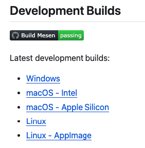
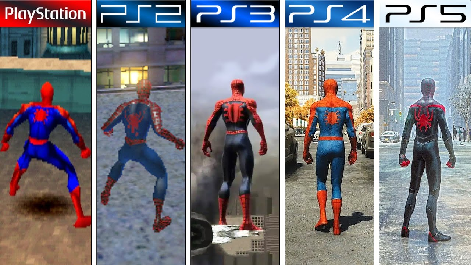

É isso aí! Como comentei brevemente na última atualização, estava pensando em reconstruir o site inteiro utilizando a tecnologia Jekyll, um gerador de sites estáticos…
Dito e feito! Empolguei, varei algumas horas estudando, entrei em hiperfoco e pronto, o site está completamente migrado!
Uma das coisas que me levou a criar este site foi reviver aquela experiência do início dos anos 2000, ainda adolescente, de aprender sobre as tecnologias de desenvolvimento, criando sites sobre os próprios hobbies, sem nenhum compromisso profissional, sem nenhum compromisso com o grande público, apenas pelo compartilhamento e pelo aprendizado. Em uma época em que a internet não era tão baseada em redes sociais e também não tão centralizada nestas redes.
Um site de nicho voltado para quem conseguir encontrar e quiser acompanhar. Com um conteúdo que pode perpetuar por anos.
Aprender uma nova tecnologia de construção de sites faz parte desse processo. É o simples prazer de ler uma documentação e tentar implementar. Mesmo que, na prática, o resultado final para o usuário seja exatamente o mesmo site de antes, com, até o momento, exatamente o mesmo conteúdo. Com certeza vai facilitar para mim nas próximas atualizações ao mesmo tempo que continua sendo como eu inicialmente vislumbrei: completamente estático e sem a necessidade de grandes recursos de hospedagem.
Saí desta experiência com aprendizado e com meu hobby saciado :P
Bom, se você tem interesse em usar o Jekyll em seu site estático, basta ler um pouco sobre para entender como funciona e seguir o passo a passo no site oficial: https://jekyllrb.com/docs/
É algo que envolve muito uso de linha de comando. É algo voltado para desenvolvedores e pessoas com uma base técnica mais sólida. Mas, tendo essa familiaridade com programação, é das coisas mais fáceis.
Eu preferi criar o meu site com o argumento --blank, para não utilizar um dos temas que já vem com o Jekyll. Assim, comecei a transformar os antigos modelos HTML para o formato dele.
Durante esse processo, vale a pena analisar os arquivos do tema mais padronizado que vem com o Jekyll, o Minima. Segue a pasta dele no Github: https://github.com/jekyll/minima/tree/master
Trago hoje um tutorial da sequência de tutoriais em que aprendemos conceitos fundamentais de ROM Hacking através do clássico Super Mario Bros.
Desta vez, faremos um mod no jogo para que fiquemos com vidas infinitas. É mais uma oportunidade de você aprender a utilizar o Debugger e aprender conceitos de Assembly.
Você pode acessá-lo na área de Tutoriais.

Sobre os projetos, estamos na etapa final do Alcahest. A bucha está sendo o sistema de passwords, onde cada uma delas compartilha do nome do estágio atual, mas tem algumas complicações na maneira como as expressões são formadas. Vai dar certo, mas está sendo um trabalho de formiguinha para organizar tudo.
Estou também considerando tirar o site da NeoCities e refazê-lo usando alguma biblioteca de sites estáticos, como o Jekyll, apenas pelo aprendizado. Tirar da NeoCities é porque estou incomodado com a indexação do site no Google e tenho muitos indícios que tem a ver com o fato de ser um site da NeoCities e não apenas elementos internos da construção dele.
Bom, vamos ver o que fazer nos próximos dias!
Além de alguns ajustes de layout feitos no site durante este final de semana, adicionei uma build do assembler Armips para o sistema operacional macOS para equipamentos Mac M1 e M2.
O Armips é um assembler para consoles com arquitetura Arm, Mips e SuperH. Ou seja, pode ser utilizado para Playstation 1, Playstation 2, PSP, Nintendo 64, GBA, Nintendo DS e 3DS, Sega Saturn e Sega 32x.
Para baixar a build para Mac (caso exista algum outro louco neste Brasil que faça ROM Hacking e use Mac…), acesse a área de Ferramentas.
Acesse também o Github oficial do Armips para conhecê-lo mais.
É isso aí! Recomendando aqui o lançamento de uma ótima tradução!
Terranigma é um clássico RPG de SNES, mas que nunca teve uma tradução para o português completa, bem revisada e bem finalizada. É um projeto que já foi iniciado várias vezes, por diversos grupos e em épocas diferentes. A versão mais atual e recente que havia disponível era do ano de 2010, mas repleta de erros e com um visual não muito agradável.
Por esse motivo, muitos ainda preferiam buscar traduções em inglês, mas isto acabou agora! Foi lançada a versão definitiva em português deste jogo, em um projeto encabeçado pelo Dindo, conhecido na comunidade por trabalhar em RPGs de SNS, junto com uma equipe de colaboradores, das quais eu tive o prazer de dar uma pequena colaboração também.
Agora o jogo está totalmente traduzido, possui uma fonte VWF muito agradável de ser lida, não há palavrões fora de contexto como na antiga e está muito bem revisado.
Confira alguns prints:


Você pode acessar a tradução clicando aqui.
O processador 6502 é usado em consoles como os da família Atari, PC Engine e o famoso NES. O SNES também utiliza uma versão modificada desse processador. Assim, saber programar em Assembly 6502 é útil tanto para depurar esses consoles quanto para começar a depuração de jogos do SNES.
Traduzi um ótimo tutorial de Nick Morgan, que ensina a programar em Assembly 6502 passo a passo. O tutorial inclui simuladores integrados, permitindo que você execute o código imediatamente e observe os efeitos no processador.
Acesse em https://taihendarou.github.io/6502facil/
É isso aí! Saiu uma nova versão do emulador Mesen 2, com duas super novidades.
Uma delas, e provavelmente a melhor, é o suporte para Game Boy Advance!
Este é um excelente emulador para debugging, com ótimas ferramentas para fazer todo tipo de depuração. É minha primeira escolha para qualquer projeto de rom hacking. E agora podemos fazer isso também com o GBA!
E a outra novidade é que agora ele tem build oficial para macOS, tanto para a versão com processador Intel quanto para a versão com processador Apple Silicon.
Na versão anterior, tive que montar todo o ambiente de desenvolvimento aqui e fazer a compilação manual. Tanto que até disponibilizei a build aqui no site. Agora, não será necessário todo esse trabalho para a nova versão. Basta baixar oficialmente no Git dos desenvolvedores.

Link para download: https://github.com/SourMesen/Mesen2
EAcabei de adicionar um novo tutorial dentro da categoria Aprenda ROM Hacking com Super Mario Bros. Nele, você aprenderá a identificar o endereço da memória que armazena o número de vidas atual do Mario e depois identificar a instrução responsável por definir o valor de vidas inicial, e por fim, aplicar uma mudança definiva nesse valor.
Tutorial - Alterando o número inicial de vidas do Mario
Estava vendo um corte do Flow Games onde surgiu a famosa discussão sobre o Playstation 2 ser ou não ser um console retrô. Discussão antiga, já houve uma onda de vídeos sobre o assunto em canais de retrogaming.
Bom, sintetizei a minha visão em um artigo. Como o título dessa notícia já diz, eu não considero o Playstation 2 um videogame retrô. Sei que ele foi lançado a mais de 24 anos. Sei que existem pessoas que nasceram depois do PS3 e já transam, mas acredito que a definição de retrô pouco tem a ver com o tempo.
Por que o Playstation 2 não é um console retrô?
Constantemente, a discussão sobre o PlayStation 2 (e, às vezes, até o PlayStation 3) poder ser considerado um console retrô reacende em algum lugar da internet. O principal argumento para considerá-lo retrô reside no tempo desde seu lançamento. O PlayStation 2 foi lançado no Japão em 4 de março do ano 2000; ou seja, já se passaram no mínimo 24 anos até a data em que você está lendo este artigo.
Apesar de o argumento temporal ser compreensível, aqui explicarei por que não considero o PlayStation 2 um console retrô. Todos os argumentos aqui valem também para o Game Cube e para o primeiro XBox.
A definição de retrô deve ir além da simples passagem do tempo, pois a experiência dessa passagem é um conceito relativo que depende muito mais das mudanças ocorridas durante esse período do que da duração do tempo em si.
Pensemos na ideia de “5 anos atrás”. Para um jovem de 20 anos, isso foi “há muito tempo atrás”. Na perspectiva dele, 5 anos atrás, ele era um mero adolescente, ainda sob a tutela dos pais, cursando o ensino médio, com características físicas juvenis e em fase de desenvolvimento para a adultez. Já para um adulto de 40 anos, os mesmos 5 anos não parecem tanto tempo assim. Aos 35 anos, esse adulto era basicamente a mesma pessoa.
O fenômeno da passagem do tempo é amenizado ou intensificado conforme as mudanças que experimentamos.
Em 2005, no auge das jogatinas com PlayStation 2, já considerávamos o Super Nintendo e o Mega Drive como videogames retrô. Naquela época, ambos tinham por volta de 15 anos. A razão para essa percepção é que a experiência de jogo desses consoles da década de 90 era completamente diferente da experiência dos consoles daquele momento, conferindo-lhes um status retrô.
Do Super Nintendo para o PlayStation 2, muito mudou. Do PlayStation 2 para o PlayStation 5, pouco mudou. É nisso que se sustenta meu argumento.
Quanto à experiência de jogo, os jogos de PlayStation 2 se misturam com os atuais em muitos aspectos. Qualquer jogo de PS2, com um leve upscaling ou remasterização, pode facilmente ser confundido com jogos atuais, especialmente considerando os jogos disponíveis para dispositivos móveis. A similaridade gráfica e de jogabilidade faz com que os títulos do PS2 não causem estranheza nem mesmo às gerações mais jovens, que podem recebê-los com a mesma naturalidade de jogos contemporâneos, sem perceber que muitos destes já têm mais de 20 anos.

A partir do PlayStation 2, tudo foi uma evolução tecnológica das mesmas coisas.
O design de seu controle, por exemplo, estabeleceu um padrão que persiste até hoje. Tanto no PlayStation 2 quanto nos consoles atuais, a essência do controlador é a mesma: dois analógicos, D-Pad, quatro botões do lado direito e quatro botões de ombro. A partir disso, tivemos apenas melhorias incrementais, mas pouca ou quase nenhuma mudança conceitual.
https://hextinkers.neocities.org/img/artigo_ps2_retro/controles_de_playstation.png
A mídia física, embora tenha evoluído em capacidade, mantém-se conceitualmente a mesma, um disco óptico. Não houve uma mudança disruptiva como a que ocorreu do cartucho para o CD. Ou seja, o DVD do PlayStation 2 e o disco do PlayStation 5 são essencialmente a mesma coisa, apenas com a evolução natural fruto dos 20 anos de evolução tecnológica.
Além disso, a experiência de jogabilidade se mantém consistente através dos gêneros, com avanços focados mais em aspectos gráficos e de performance do que em mudanças fundamentais na forma de jogar. O PS2 consolidou as gameplays em 3D, com personagens controlados pelo analógico e com um game design focado mais no enredo do que nos desafios mecânicos.
Um jogo de aventura e exploração, como God of War, é essencialmente a mesma coisa que um jogo do mesmo gênero nos dias de hoje. O mesmo vale para jogos de tiro em primeira pessoa, jogos de esportes e os principais demais gêneros.
https://hextinkers.neocities.org/img/artigo_ps2_retro/ps2_gow.jpeg
Novamente, a experiência de jogo é a mesma, apenas com evolução gráfica e de performance.
Além disso, o PS2 iniciou a era dos consoles como centrais de multimídia, e não apenas como equipamentos usados exclusivamente para jogos. Esta função se expandiu nas gerações subsequentes, novamente com avanço tecnológico.
Por tudo isso, concluímos que o PlayStation 2 se insere mais em uma linha de continuidade com a era atual do que numa demarcação clara de uma era anterior dos videogames. Sua capacidade de integrar-se à modernidade, sem causar estranheza nas novas gerações, desafia a classificação simplista como retrô, baseada unicamente na passagem do tempo.
A quinta geração, com PlayStation 1, Nintendo 64 e Sega Saturn, demarca claramente uma transição da era retrô para a era moderna. A maioria dos aspectos que se consolidaram após o PlayStation 2 estava em etapa de protótipo ou desenvolvimento na quinta geração.
É claro que o PlayStation 2 possui, sim, alguns elementos de uma era retrô, como o sinal analógico, aspecto 4:3, armazenamento por meio de memory cards, experiência primordialmente offline e multiplayer primordialmente local. Mas, no conjunto da obra, ele possui muito mais semelhanças do que diferenças se comparado aos consoles modernos.
Sendo assim, o que é um console retrô? Da quinta geração, incluindo a própria, para baixo!
Adicionada uma versão Windows do NES Tile Extractor, uma ferramenta que criei quando estava iniciando no ROM Hacking e que tem como objetivo extrair para um arquivo separado uma sequência de tiles. Apesar do nome, ela não é exclusiva para NES, mas sim para qualquer tipo de tile 16 bytes (2bpp - 2 bytes por pixel).

Confira em Ferramentas
Acompanho vários canais sobre retrogaming no YouTube e uma discussão que eventualmente surge é: Como recuperar a vontade ou prazer em jogar videogames?
Em um desses vídeos, um comentário me chamou atenção e virou uma chave aqui na minha cabeça sobre isso. Afinal, eu também já passei por isso, tendo a sensação de que não me divertia mais tanto com videogames, mas insistia em querer que eles me divertissem.
Não tenho o comentário para colar, mas era de um cara dizendo que chegou à conclusão de que gosta mais da ideia de gostar de videogames do que de jogar videogames.

Isso faz muito sentido. A ideia de gostar de videogames remete à nostalgia, a um estilo de vida, a um grupo social com pessoas com muitas semelhanças que vão além do videogame.
Videogame é muito mais do que jogar. Videogame engloba música, arte visual e design, eletrônica e computação, histórias e roteiro, mundos alternativos e de fantasia. Tudo isso, somado à nostalgia, pode levar você à posição de ser mais um apreciador do mundo dos videogames do que um jogador.
E eu cheguei à conclusão de que é exatamente isso que eu sou: um apreciador.

Não vou usar a desculpa da falta de tempo para justificar o fato de não jogar tanto. Sim, quando ficamos mais velhos, temos menos tempo do que na infância e adolescência. Mas veja, estou usando esse tempo para escrever aqui, devo passar algumas horas no celular, assisto a algumas coisas na Netflix. O fato é que eu não jogaria mais do que jogo hoje mesmo se tivesse tempo. Talvez você também chegue a essa conclusão depois de refletir sobre como usa o seu tempo.

Nossa cabeça muda com o passar do tempo. Jogar videogame nos dias de hoje jamais será como era na infância, e isso independe de qual geração estamos falando. As crianças entram em um mundo de imaginação e fantasia com muito mais facilidade, além de intensificarem os estímulos ao ponto de confundir a realidade com ficção.
Ao mesmo tempo, conforme envelhecemos, nossa mente fica mais inflexível, visualizamos o mundo e a vida de forma mais concreta e física. Podemos apreciar histórias que se passam em mundos mágicos de ficção, mas jamais vamos experienciá-las de forma tão intensa quanto uma criança.
Você jamais irá experienciar Chrono Trigger da mesma forma que experienciou na primeira vez que jogou tendo 15 anos de idade.

Outro aspecto é que o fator novidade se torna menos frequente. Hoje, raramente encontraremos um jogo diferente de tudo o que já vimos. E não é só porque a indústria não inova, mas porque já tivemos tempo de vivenciar de tudo mesmo. A sensação de descoberta, exploração e aprendizado tende a ser menor, simplesmente porque já descobrimos, exploramos e aprendemos muito do que o mundo dos videogames tem a oferecer.
Por isso, hoje acredito que não faz sentido brigarmos contra a falta de vontade de jogar. Não existe cartilha sobre o que é ser um gamer (e se alguém tentar impor algo do tipo, é esse alguém que está errado).
Está tudo bem em ser um mero apreciador. Está tudo bem em assistir vídeos sobre a história dos jogos obscuros do Mega Drive ou Super Nintendo e nunca parar para jogá-los, mesmo com suas ROMs estando a alguns cliques de distância.
Edição gráfica não é minha especialidade, mas gosto de encarar novos desafios e navegar em mares onde não é meu lugar. No fim, acho que ficou satisfatório!
Trata-se de uma tradução do jogo Open Season, um jogo de Game Boy Advance sobre o filme de mesmo nome. Em português, o filme teve o título traduzido para O Bixo Vai Pegar. O desafio era justamente traduzir a logo da tela de introdução do jogo.

O projeto foi conduzido por Max5088 e contou com a participação de várias pessoas. Além da logo, todos os gráficos do jogo estão traduzidos. Além, obviamente, de todo o texto.

Vou deixar o link da divulgação do patch no fórum do FURT. Quem sabe em breve eu crie uma sessão aqui no site para traduções em que atuei como colaborador em alguma área.
Link externo: FURT - [GBA] O Bicho Vai Pegar
Adicionado um novo tutorial, falando especificamente sobre o sistema binário e voltado para iniciantes que estão desenvolvendo a base teórica necessária para mexer com rom hacking.

Aproveitando esta inclusão, a área de tutoriais foi atualizada com uma separação por categorias. Agora temos os tutoriais da base teórica, os tutoriais da série em que utilizamos o jogo Super Mario Bros. para aprender rom hacking, e por fim uma categoria chamada Outros.
Também criei uma página para o projeto Alcahest. O projeto está em andamento, em fase de tradução e revisão dos textos, com as principais ferramentas necessárias já desenvolvidas. Este já é o quarto projeto de SNES! Atualmente, estamos com dois lançados e dois em andamento (o outro é Super Adventure Island II, parceria com Patryckpo.
Por fim, nos deparamos esta semana com o encerramento das atividades de um emulador para Nintendo Switch, o famoso Yuzu. Isso levantou várias discussões a respeito da legalidade da emulação. Elaborei um texto discorrendo sobre este assunto e deixei registrado aqui no site em formato de artigo.
Artigo - Nintendo derruba o emulador Yuzu! Emulação é ilegal?
Estou fazendo mudanças no formato do site, pois o conteúdo tem crescido e agora precisamos de uma melhor organização. Tudo ficava na página inicial, mas agora teremos uma página para a lista de traduções, outra para a lista de ferramentas, lista de links e assim por diante.
Além disso, agora temos esta área para atualizações. Assim posso deixar as novidades e atualizações registradas, junto com um espaço mais livre para escrever algo que não se encaixe em nenhuma outra área.
Sobre projetos, atualmente estou trabalhando no Alcahest, um adventure RPG bem interessante de SNES. Atualmente em fase de tradução dos textos, com as principais ferramentas e demandas de ROM Hacking já feitas.

Também estou estudando sobre VWF (Variable Width Font) na expectativa de implementar em um projeto futuro que tenho em vista.
Por fim, devo começar em breve a traduzir Kirby’s Adventure de NES. Por enquanto discutindo a tradução de alguns termos e já editando alguns gráficos com meu parceiro Sliter. Veja que legal estão ficando as cartas:

Bom, caso encontre algum link quebrado, me avise por favor! Com estas mudanças no site, algo pode ter escapado. Até a próxima!